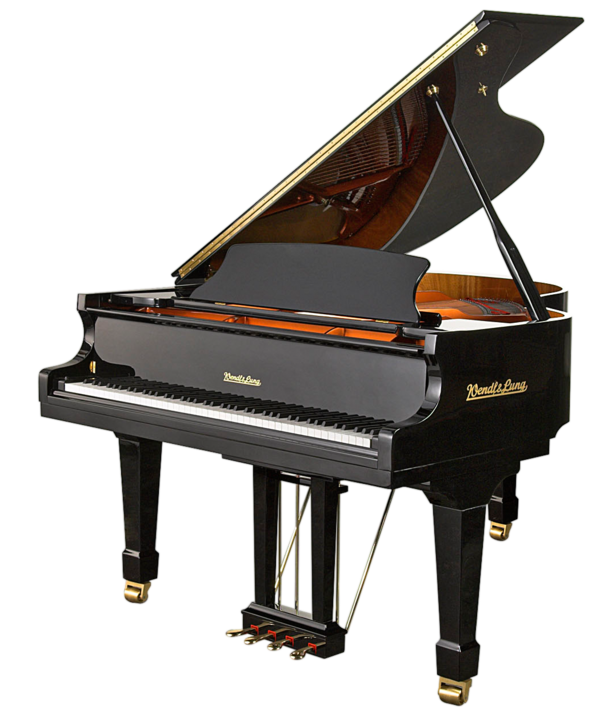

Музыкальные инструменты
Что звучит, кто играет и за что каждый отвечает.
Струнные инструменты

У струнных инструментов звук рождается из колебаний струны. Струна зажата между двумя точками, музыкант приводит её в движение смычком, пальцами или медиатором. Корпус усиливает колебания и придаёт звуку окраску. Чем длиннее и толще струна, тем ниже высота звука.
В оркестре струнные составляют основу звучания: скрипки ведут главную мелодию, альты и виолончели заполняют средний регистр, контрабасы поддерживают бас. В современной музыке к этому набору добавилась гитара — акустическая, электро- и бас-гитара. На них строятся рок-рифы, аккомпанемент в поп-музыке и мягкие фактуры в джазе.
Струнные удобны тем, что на одном инструменте можно играть и аккордами, и одноголосной мелодией. Поэтому они подходят и для сольных выступлений, и для ансамблей — от камерного трио до большого симфонического оркестра.
Клавишные инструменты
Клавишные инструменты устроены так, чтобы музыкант мог одновременно управлять и мелодией, и аккордами. У фортепиано под каждой клавишей скрыт молоточек, который ударяет по струне. От силы нажатия зависит громкость, поэтому инструмент позволяет играть и очень тихо, и очень громко.
Во второй половине XVIII века фортепиано постепенно вытеснило клавесин. На нём писали музыку Гайдн, Моцарт, Бетховен, позже — Шопен, Лист, Рахманинов. Для композиторов это был универсальный инструмент: на нём удобно пробовать гармонию, эскизы будущих симфоний и опер.
В XX веке появились электронные клавишные — синтезаторы и цифровые пианино. Они позволяют имитировать оркестр, бас и ударные, а также создавать полностью искусственные тембры. Сейчас клавишные используются и в академической музыке, и в попе, и в электронной сцене.
Духовые инструменты

В духовых инструментах источник звука — поток воздуха, который направляет сам музыкант. В деревянных духовых (флейта, кларнет, гобой, фагот) высота звука меняется за счёт открытия и закрытия отверстий. В медных (труба, тромбон, валторна) важную роль играют положение клапанов и работа губ.
Духовые легко пробиваются через общий звук оркестра, поэтому именно им часто доверяют фанфары, сигналы и яркие солирующие фразы. В джазе саксофон и труба стали символами жанра: по их тембру можно узнать стиль даже без слов и аккордов.
В ансамблях духовые используют как для плотных аккордов, так и для одиночных линий, которые «прорезают» фактуру. В саундтреках они часто отвечают за напряжение, героический характер или, наоборот, мягкую лирическую окраску.
Сводная таблица
Кратко о том, что обычно играют разные группы инструментов.
| Группа | Примеры | Основная роль |
|---|---|---|
| Струнные | Скрипка, гитара | Мелодия, аккомпанемент, фон |
| Клавишные | Фортепиано, синтезатор | Гармония, аккорды, фактура |
| Духовые | Труба, саксофон | Соло, фанфары, яркие акценты |
Ссылки
Про устройство и виды инструментов можно почитать в статье на Википедии .